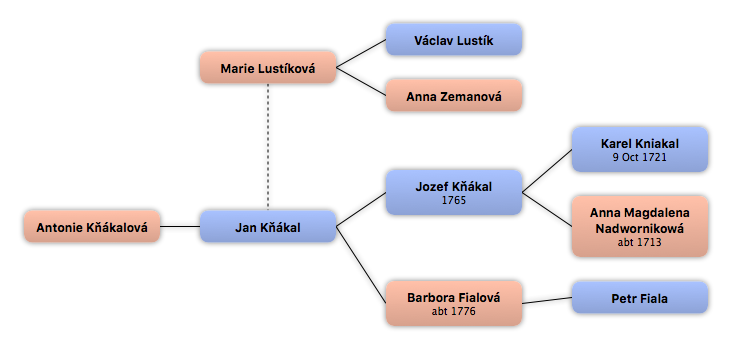

Home
Home
 Persons
Persons
 Families
Families
 Sources
Sources
 Statistics
Statistics
Marie Lustíková

Context

Parents
| Father | Date of Birth | Mother | Date of Birth |
|---|---|---|---|
 Václav Lustík Václav Lustík
|
Anna Zemanová
|
Partners & Children
| Partners | Date of Birth | Children |
|---|---|---|
|
Jan Kňákal
|
Antonie Kňákalová
|
Events
| Event Type | Date | Place | Description |
|---|---|---|---|
| Birth | ze Zruče |
Facts
Media
Note
Sources
Kinships
| Name | Degree of Kinship | Date of Birth | Place of Birth | Date of Death | Place of Death |
|---|---|---|---|---|---|
| Partners | |||||
| Partner or Husband | Úmonín, Kutná Hora, Středočeský kraj, Czech Republic | ||||
| Children | |||||
| Daughter | Úmonín, Kutná Hora, Středočeský kraj, Czech Republic | ||||
| Parents | |||||
| Mother | Chrást, Kutná Hora, Středočeský kraj, Czech Republic | ||||
| Father | |||||
| Grandchildren | |||||
| Grandson | 11 Nov 1864 | Nová Lhota, Kluky, Kutná Hora, Středočeský kraj, Czech Republic | 10 Apr 1910 | Baltimore, Maryland | |
| Grandson | 2 Jan 1871 | Nová Lhota, Kluky, Kutná Hora, Středočeský kraj, Czech Republic | |||
| Great grandchildren | |||||
| Great grandson | 29 Dec 1895 | Chicago, Cook, Illinois | 31 Mar 1947 | Kanawha, West Virginia | |
| Great granddaughter | abt 1904 | Austria | |||
| Great grandson | 2 Apr 1907 | Culpeper, Catalpa, Virginia | 1994 | Culpeper, Catalpa, Virginia | |
| Grandchildren-in-law | |||||
| Granddaughter-in-law | abt 1872 | Kutná Hora | |||